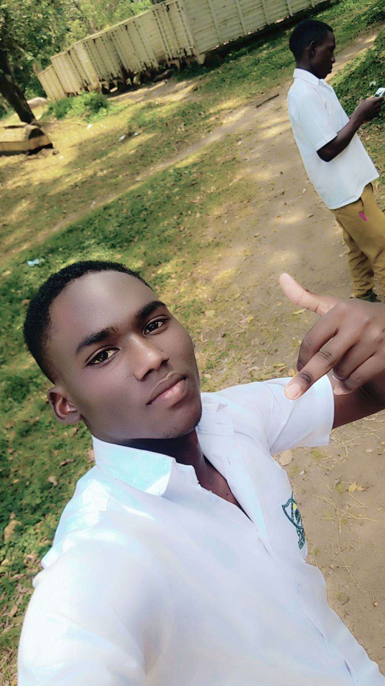

MEET ZZIWA
MUHAMMED AND THE SQUAD FRIENDS FOREVER"LIFE,LAUGHTER & MEMORIES-CREW
HOME
We are Zziwa Muhammed and friends, a team of
legends finishing S.4 this year. If you ever wondered what happens when you
mix books, laughter, pool table, action movies, jokes, and a bit of madness…
well, that’s us ӭ.
School life for us has never been just about
reading and exams. It has been about memories, friendship, and the little
dramas that make each day unforgettable.
˸ The Crew
Mugaya Roghny
R– the chief joker. Honestly, if laughter was a subject on the UNEB
timetable, Roghny would have an A+ with distinction. His jokes have rescued
us from boring prep sessions, serious teachero mods, and even exam tension.
Kizito Juma –
the master of teasing. He can pick the smallest
mistake you made and turn it into a whole comedy show. Even when you try to
get angry, you end up laughing until tears drop.
Nkalubo Michel
– the storyteller. If there’s a new
“friend story” in school, just sit down and listen. He narrates with so much
energy that even teachers want to join in.
Kakooza Edrine –
the action movie director ɂ. Every story he
tells feels like a Hollywood film, full of explosions, car chases, and
kung-fu kicks. If life had sound effects, Edrine would provide them himself.
Eddy Mwenye
– the “serious” one. He likes to act mature and
strict… but two minutes later, you find him laughing with us like he never
meant it. We’re still waiting for the day he’ll actually be serious for
real.
Musis Ibrahim
– the ladies’ man. When he walks, even the wind
knows he’s thinking about girls. His friends say if Ibrahim had a diary, it
would just be a list of crushes ӷ.
Kibirango Edrine
– pool table and ludo master. This
guy doesn’t just play, he dominates. Losing to him is almost a school
tradition at this point.
Sematimba Godfrey –
same pool and ludo energy. When he and Mwenye
team up, just know the game is already over. The rest of us are just there
for decoration.
Kawemba John –
the “Breaking News” reporter . He
can tell you about a story that doesn’t even exist. Sometimes he lies so
well that even he starts to believe himself. But honestly, that’s
what makes him fun — the whole crew ends up
laughing.
Lukungu Swabulu (Kisige) –
our nickname champion. If jokes were money,
Kisige would be the richest in Uganda. His timing is perfect — just when
everyone is silent, boom, he drops a joke that finishes us.
Amuli Mubarack –
yet another man of gals. Together
with Ibrahim, they run the “department of love affairs.” If you want advice
on girls, don’t ask teachers, just ask Amuli.